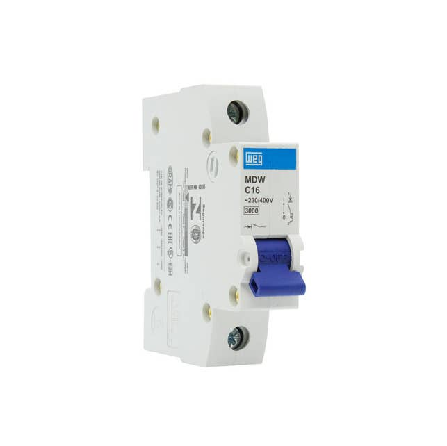
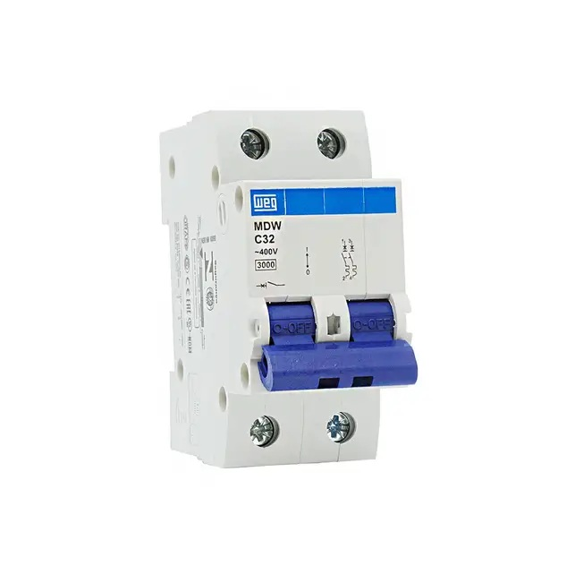
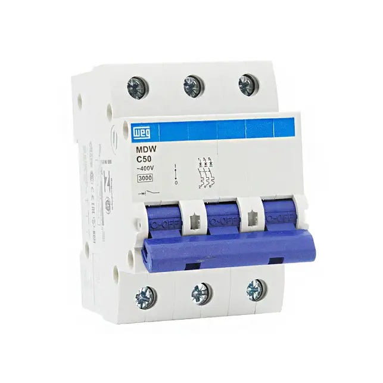
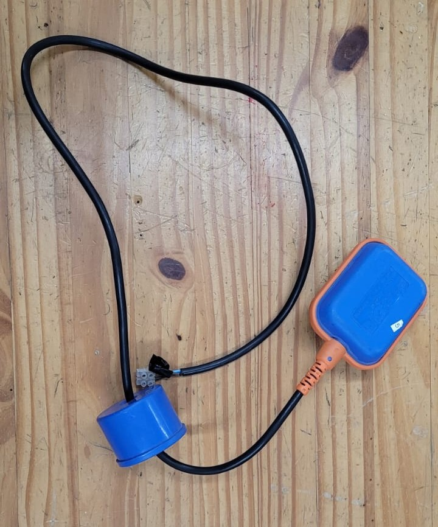
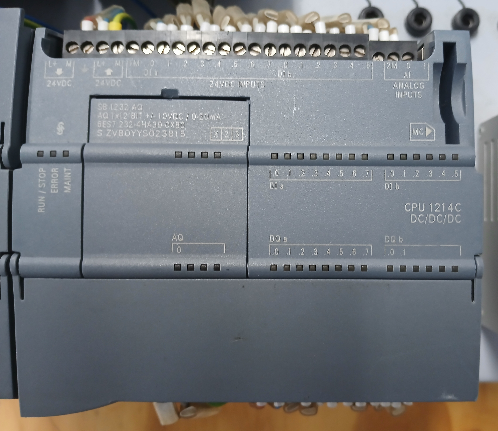
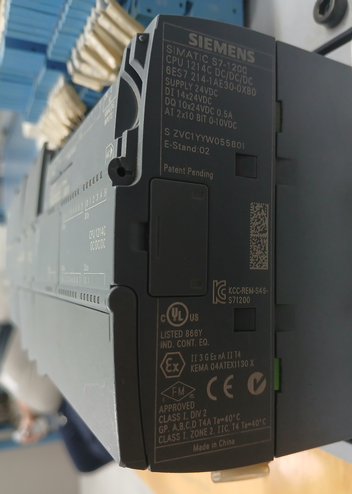
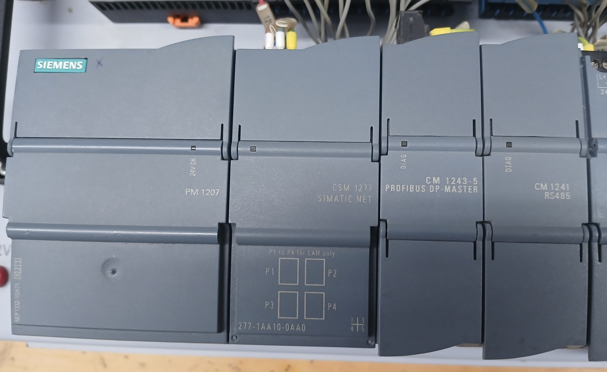

Componentes
Multímetro

Conceito
É o instrumento de medição multiuso do eletricista. Ele condensa em um único aparelho a capacidade de avaliar diversas grandezas elétricas, como tensão (Volts), corrente (Amperes), resistência (Ohms), além de testar continuidade e diodos.
Aplicações
• Diagnóstico de falhas e testes em circuitos eletrônicos.
• Medição de tomadas, baterias e barramentos.
• Verificação de fios rompidos (teste de continuidade).
Disjuntor
É um dispositivo de proteção termomagnético mecânico cuja função é monitorar a corrente do circuito e desarmar automaticamente caso detecte uma sobrecarga ou um curto-circuito. A diferença entre suas versões está na quantidade de fases (polos) que o dispositivo protege e desliga simultaneamente:
Disjuntor Monofásico (1 polo)

Diferencial
Monitora e protege apenas uma única fase.
Aplicações
• Circuitos elétricos simples e de menor potência, como iluminação e tomadas comuns residenciais.
Disjuntor Bifásico (2 polos)

Diferencial
Monitora duas fases ao mesmo tempo. Possui um mecanismo de disparo unificado: se ocorrer uma falha em uma das fases, o disjuntor desliga ambas as fases juntas por segurança.
Aplicações
• Equipamentos residenciais ou comerciais de média potência, como chuveiros elétricos, sistemas de ar-condicionado e circuitos bifásicos gerais.
Disjuntor Trifásico (3 polos)

Diferencial
Monitora três fases simultaneamente. Também possui disparo unificado, sendo crucial para evitar que equipamentos trifásicos queimem ao rodar com a falta de uma das fases.
Aplicações
• Motores elétricos industriais trifásicos, máquinas pesadas e quadros gerais de distribuição industrial ou comercial de alta potência.
Disjuntor Motor

Conceito
Uma evolução do disjuntor comum, projetado especificamente para a proteção e manobra de motores elétricos, pois ele reúne, em um único componente, as funções de disjuntor e relé térmico. Além de proteger contra curto-circuito e sobrecarga, ele possui uma sensibilidade extra para detectar a falta de fase (o que queimaria o motor rapidamente), uma classe de disparo, suportando o pico de corrente na partida do motor, botão de teste e travamento, com mecanismos para bloqueio de segurança e permite regular a corrente exata de trabalho do motor.
Aplicações
• Proteção e partida direta de motores elétricos industriais.
• Painéis onde se deseja economizar espaço, eliminando a necessidade de usar um disjuntor comum e um relé térmico separados.
Botoeira

Conceito
É um botão de comando manual que serve para abrir ou fechar um circuito temporariamente, dependendo de seu tipo: Normalmente Aberto (NA), Normalmente Fechado (NF), ou ambos (NA e NF). O tipo mais comum é o pulsador (com mola), que só altera seu estado enquanto estiver sendo pressionado.
Aplicações
• Verde e Preta:
Usadas para ligar, dar partida ou arranque em máquinas e motores. Também indicam que o sistema está em condições normais de operação.


• Vermelha:
Utilizada para parar ou desligar o sistema em condições normais de operação.

• Amarela:
Usada para cancelar uma operação, interromper um ciclo perigoso ou iniciar um retorno de segurança. Também pode servir para inverter o sentido de giro.

• Azul e Branca:
Destinadas a qualquer outra função que não seja ligar, desligar, emergência ou cancelar. São aplicadas quando nenhuma das outras cores se encaixa na necessidade do comando.


• Emergência:
Sempre vermelha (frequentemente com fundo amarelo) e do tipo "cogumelo". Possui trava mecânica para parada imediata do sistema e só permite o reinício após ser destravada manualmente.

Chave de Retenção

Conceito
Diferente da botoeira pulsadora, a chave de retenção mantém a posição após ser acionada. Ela possui uma trava mecânica interna e só muda de estado novamente se o operador for lá e girar ou pressionar o botão outra vez (como o interruptor de luz da sua casa).
Aplicações
• Chaves seletoras de modo (ex: alternar o painel entre "Manual" e "Automático").
• Chaves gerais de ligar/desligar equipamentos.
Sensor Fim de Curso (Limit Switch)

Conceito
É um interruptor eletromecânico acionado pelo impacto físico de um objeto móvel. Quando a estrutura da máquina encosta no rolete ou na haste do sensor, ele comuta seus contatos e envia um sinal elétrico para o sistema.
Aplicações
• Parar o motor de um portão eletrônico quando ele chega ao final do trilho.
• Identificar se a cabine de um elevador chegou ao andar correto.
• Garantir o limite de movimento seguro em braços mecânicos e pontes rolantes.
Sensor de Nível Tipo Chave Boia

Conceito
É um dispositivo eletromecânico simples, prático e amplamente utilizado para o controle e monitoramento do nível de líquidos. Seu funcionamento baseia-se em uma boia flutuante que acompanha a subida ou descida do fluido. Ao atingir uma inclinação predeterminada, um mecanismo interno (geralmente uma esfera metálica ou contato magnético) atua sobre um microinterruptor, comutando seus contatos para abrir ou fechar o circuito elétrico de comando.
Aplicações
• Automação do acionamento de bombas d'água (ex: ligar a bomba automaticamente quando a caixa d'água estiver vazia e desligar quando encher).
• Proteção de sistemas de bombeamento contra o trabalho a seco, impedindo que o motor funcione sem água e acabe queimando.
• Acionamento de alarmes sonoros ou luminosos para indicar níveis críticos (risco de transbordamento ou falta total de abastecimento) em cisternas (reservatório projetado para captar, armazenar e conservar água, principalmente da chuva ou de reuso), poços e tanques industriais.
Motor Elétrico de Indução Trifásico (MIT)

Conceito
É a força motriz da indústria. Uma máquina rotativa que converte energia elétrica trifásica em energia mecânica através do eletromagnetismo. É extremamente robusto, confiável e não utiliza escovas físicas para funcionar, o que reduz drasticamente a necessidade de manutenção.
Aplicações
• Acionamento de esteiras transportadoras, bombas d'água e compressores.
• Operação de exaustores, tornos, fresadoras e misturadores industriais.
Relé Temporizador

Conceito
É um dispositivo de controle que serve para abrir ou fechar contatos elétricos após o transcurso de um tempo pré-determinado. Ele pode funcionar com retardo na energização (espera um tempo para ligar) ou na desenergização (espera um tempo para desligar).
Aplicações
• Sistemas de partida de motores do tipo Estrela-Triângulo (controlando o tempo de transição).
• Sequenciamento de esteiras industriais (ligar a esteira B 10 segundos depois da esteira A).
• Sistemas de iluminação ou ventilação temporizada.
Relé Térmico (ou de Sobrecarga)

Conceito
É um dispositivo focado exclusivamente em salvar o motor de superaquecimentos causados por sobrecargas prolongadas. Ele possui lâminas bimetálicas internas que se dobram com o calor gerado pelo excesso de corrente; ao dobrarem, elas desarmam o circuito de comando do motor.
Nota de segurança
Ele não protege contra curto-circuito, precisando sempre trabalhar em conjunto com um disjuntor ou fusível.
Aplicações
• Proteção direta de motores elétricos, sendo montado logo abaixo do contator de potência no painel de comando.
CLP (Controlador Lógico Programável) / PLC (Programmable Logic Controller)


Conceito
É o "cérebro" da automação industrial. Trata-se de um computador robusto projetado especificamente para comandar e monitorar máquinas e/ou processos em ambientes industriais, recebendo sinais de dispositivos de entrada (como sensores e botoeiras), processando essas informações através de um programa lógico e enviando comandos precisos para os dispositivos de saída (como motores e contatores).
Aplicações
• Controle, automação e sincronização de linhas de montagem e esteiras transportadoras.
• Gerenciamento de processos industriais (controle de temperatura, vazão, nível e pressão).
• Automação de máquinas de envase, injetoras de plástico e sistemas robóticos.
• Controle de infraestruturas como sistemas de bombeamento de água, elevadores e semáforos inteligentes.
Plaqueta de Identificação do CLP

Conceito
É a "carteira de identidade" técnica gravada na carcaça externa do CLP (geralmente instalada na sua lateral). Ela reúne, em um único local, todas as especificações elétricas, mecânicas e normativas do dispositivo, fornecendo informações essenciais como:
Modelo exato:
CPU 1214C DC/DC/DC (da linha Siemens SIMATIC S7-1200)
Código de encomenda (Part Number):
6ES7 214-1AE30-0XB0
Faixas de alimentação:
SUPPLY 24VDC (Alimentação em 24 Volts de Corrente Contínua)
Capacidade de Entradas e Saídas (E/S) / Inputs and Outputs (I/O):
• Entradas Digitais (DI): DI 14x24VDC (14 Entradas Digitais em 24V DC)
• Saídas Digitais (DQ): DQ 10x24VDC 0.5A (10 Saídas Digitais a transistor em 24V DC com capacidade de 0,5A por canal)
• Entradas Analógicas (AI): AI 2x10 BIT 0-10VDC (2 Entradas Analógicas de 0 a 10V DC com resolução de 10 bits)
Número de série para rastreabilidade:
S ZVC1YYW055801 (com versão de revisão de hardware E-Stand: 02)
Certificações internacionais de segurança industrial:
• cULus Listed: Certificação de segurança elétrica para Estados Unidos e Canadá.
• Ex / ATEX (II 3 G Ex nA II T4): Certificação europeia para operação segura em áreas com atmosferas explosivas.
• FM Approved (CLASS I, DIV 2): Certificação para áreas industriais classificadas com risco de gases/vapores inflamáveis.
• CE: Marcação de Conformidade Europeia com as diretivas de segurança e saúde.
• KCC (KCC-REM-S49-S71200): Certificação de compatibilidade eletromagnética da Coreia do Sul.
• RCM / C-Tick (o símbolo de "visto"/"check"): Certificação de conformidade eletromagnética para a Austrália e Nova Zelândia.
Aplicações
• Seleção de Hardware no Software de Programação: Permite localizar a referência exata (código part number) para a correta inserção e parametrização do modelo na árvore de dispositivos do programa (ex: TIA Portal).
• Dimensionamento do Painel Elétrico: Fornece os dados nominais de tensão, corrente e potência para a escolha correta da fonte de alimentação, disjuntores de proteção e cabeamento.
• Manutenção e Substituição de Peças: Agiliza o processo de manutenção corretiva, garantindo a substituição por um componente idêntico ou equivalente sem risco de incompatibilidade elétrica ou física.
• Instalação Segura em Áreas Classificadas: Informa as normas e selos de proteção contra explosão e interferência eletromagnética (como ATEX, UL e CE), garantindo que o CLP atenda aos requisitos do ambiente fabril em que será aplicado.
Módulos de Expansão e Periféricos do CLP

Conceito
São dispositivos modulares acoplados à CPU do CLP (via barramento lateral ou trilho DIN) projetados para expandir a capacidade de alimentação, comunicação e conectividade do sistema. Eles permitem integrar o controlador a redes industriais, adicionar portas de comunicação serial e Ethernet, e fornecer energia elétrica estabilizada para todo o conjunto de automação.
Módulos do CLP presentes na imagem (Linha SIMATIC S7-1200)
Fonte de Alimentação — PM 1207 (Power Module):
Converte a tensão alternada da rede elétrica (120/230V AC) em tensão contínua estabilizada de 24V DC, garantindo energia limpa e segura para a CPU, módulos de expansão e componentes de campo.
Switch Ethernet Industrial — CSM 1277 (Compact Switch Module):
Módulo de comutação de rede com 4 portas RJ45 (P1 a P4) no padrão Industrial Ethernet / PROFINET, utilizado para interligar múltiplos dispositivos de rede dentro do mesmo painel.
Módulo de Comunicação PROFIBUS — CM 1243-5 (PROFIBUS DP Master):
Módulo de expansão que atua como mestre na rede PROFIBUS DP, permitindo ao CLP comandar remotas de Entradas/Saídas (ex: linha ET 200), acionamentos e periféricos industriais descentralizados.
Módulo de Comunicação Serial — CM 1241 (RS485):
Interface serial nos padrões físicos RS485 e RS422, utilizada para troca de dados com equipamentos de campo através de protocolos como Modbus RTU e USS.
Aplicações
• Expansão de Conectividade em Rede: Permite conectar a CPU a IHMs (Interfaces Homem-Máquina), computadores de supervisão (SCADA), inversores de frequência e ao software TIA Portal por meio das portas Ethernet do switch.
• Integração de Dispositivos de Campo: Conecta o CLP a balanças industriais, leitores de código de barras, transmissores de processo e multimedidores que utilizam comunicação serial RS485 ou rede PROFIBUS DP.
• Proteção e Estabilidade Elétrica: Garante alimentação contínua e isolada em 24V DC, protegendo os circuitos eletrônicos do CLP contra surtos de tensão e flutuações da rede elétrica principal.
• Modularidade e Flexibilidade de Projeto: Permite adequar a arquitetura do painel elétrico às necessidades específicas da aplicação, possibilitando futuras expansões sem a necessidade de substituir a CPU principal.